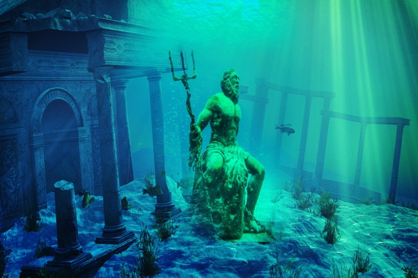
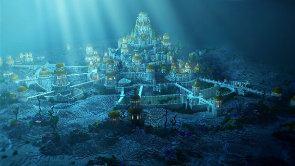

|

Poseidon en las ruinas de la atlándita. |
Bienvenido a la Atlántida, isla mítica de la cual mucho se ha hablado y poco se sabe. |
|---|---|
En el menú de navegación puedes encontrar diversos temas sobre la Atlántida. |

Recreacion de la ciudad de la Atlántida. |
La mítica ciudad perdida conocida como la Atlántida, inmortalizada a partir de los Diálogos de Platón (“Timeo” y “Critias”), ha sido motivo de exhaustivos estudios y múltiples exploraciones que se han dado a la tarea no solo de confirmar su existencia, sino de definir su ubicación exacta. De acuerdo con el iniciado y gran filósofo griego, la Atlántida fue una lúcida potencia en algún momento de la historia humana, ubicada “frente a las Columnas de Heracles” (posiblemente el estrecho de Gibraltar) y que eventualmente desapareció sumergiéndose en el mar. Según algunas teorías, esto podría haber ocurrido durante el año 9,000 A.C. Dentro de las causas probables la versión histórica atribuye la caída de la Atlántida a un frustrado intento de conquistar Atenas, mientras que las versiones “menos ortodoxas” apuntan a una desvirtuación de su sociedad, razón por la cual recibieron una especie de castigo divino en forma de desastres naturales.